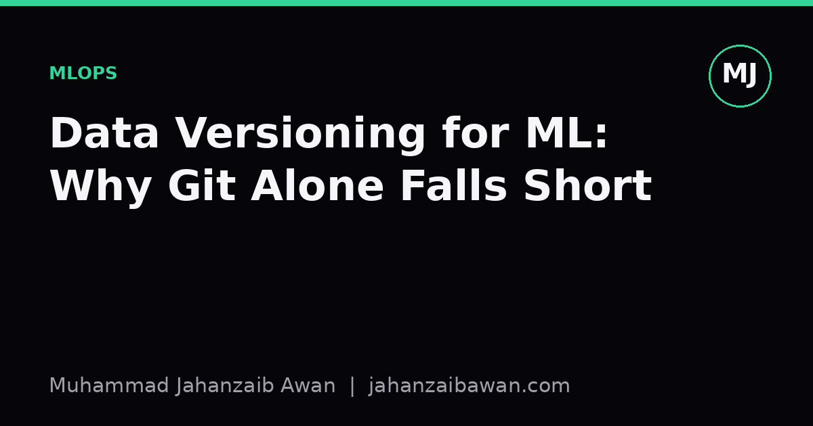

Data Versioning for ML: Why Git Alone Falls Short
Code review answers 'what changed in the model'. It rarely answers 'what changed in the data that trained it', and that gap quietly breaks reproducibility.

The problem git was never built to solve
Git is one of the best tools ever written for tracking small text files that change in predictable ways. It stores diffs efficiently, it merges branches sensibly, and it gives you a clean audit trail of who changed what and why. The trouble starts when you point it at machine learning data. A training set is rarely a small text file. It might be a directory of two hundred thousand images, a ten gigabyte parquet file, or a database snapshot that gets refreshed nightly. Git was not designed to diff binary blobs meaningfully, and committing large files to a repository bloats it until cloning becomes painful and every operation slows down.
The deeper issue is not just size, it is mutability with no visible history. Teams often treat the dataset as a single mutable object sitting on a shared drive or an S3 bucket. Someone fixes a labelling error, someone else appends new rows, a preprocessing script silently changes how missing values are imputed. None of this is captured by git unless you are disciplined enough to version every intermediate artefact, and in practice almost nobody is. The result is that six months later you cannot answer a simple question: which exact rows, with which exact labels, trained the model that is now in production.
This matters because in ML the data is not an input to the code, it is effectively part of the code. Two identical scripts trained on two slightly different snapshots of the same dataset can produce meaningfully different models. If you cannot pin down which snapshot produced which result, you cannot reproduce your own experiments, you cannot debug a regression in production, and you cannot honestly defend a reported accuracy number to a reviewer or a client.
A concrete failure mode
Imagine a team building a churn prediction model. In January they train on a snapshot of customer records and report eighty three percent accuracy on a held out test set. The code is committed to git, the model file is saved, everyone moves on. In March, someone retrains the model because a new feature was added to the pipeline. Accuracy drops to seventy six percent. The obvious suspect is the new feature, so the team spends two days debugging feature engineering code that turns out to be fine.
The actual cause was a change nobody tracked deliberately. Between January and March, a batch job that deduplicates customer records was updated to fix a bug, and it happened to remove several thousand rows that were subtly easier to classify because they were near-duplicates of training examples, effectively a mild form of leakage that had been inflating the original number. Git shows no trace of this because the data lived outside the repository entirely. Without a versioned, hashed reference to the exact dataset used in January, the team cannot even confirm this theory, they can only guess.
Now scale this up. In a typical applied project, data passes through ingestion, cleaning, feature computation, and splitting before it ever reaches a model. Each of those stages can introduce a change that is invisible to git but decisive for the result. A cleaning script that changes its outlier threshold, a feature store that recomputes a rolling average with a different window, a random seed for the train-test split that is not fixed and logged. Any one of these can move your reported metric by several points, and without data versioning you have no way to distinguish a genuine modelling improvement from an artefact of a shifting dataset underneath you.
What proper data versioning actually looks like
The fix is not to abandon git, it is to pair it with a system designed for large, evolving data. Tools built for this purpose, such as DVC or lakeFS, work by storing lightweight pointer files in git, typically a hash and a path, while the actual data lives in object storage. When the data changes, the hash changes, and that hash gets committed alongside the code that consumes it. This means a single git commit now captures both the exact code and the exact data snapshot, so checking out a commit from three months ago reconstructs the whole experiment, not just half of it.
This buys you three concrete things. First, reproducibility: you can retrain a model from any historical commit and get the same numbers, which is the baseline requirement for any result you plan to publish, ship, or defend. Second, traceability: when a metric changes, you can diff the data hash between two commits before you diff anything else, which immediately tells you whether the cause is data drift, a pipeline bug, or an actual modelling change. Third, safe collaboration: two people can work on different branches with different data transformations without silently overwriting the version the other person depends on.
There is a related discipline worth mentioning here, which is versioning your splits, not just your raw data. It is common to regenerate train, validation, and test splits every time a preprocessing script runs, using a fixed random seed and assuming that is enough. But if the underlying dataset has grown or been deduplicated between runs, the same seed no longer produces the same split, and rows that were in your test set last month might now be in your training set, quietly leaking information. Storing the split indices themselves as a versioned artefact, alongside the data hash they were computed from, closes this gap.
None of this requires heavy infrastructure to start. A minimal version of it is simply hashing your dataset file and recording that hash in the same commit message or metadata file as your training run, alongside the git commit of the code. It is not elegant, but it means you can always answer the question that matters most in applied ML: given this reported number, exactly which data and exactly which code produced it. Everything more sophisticated, dedicated tools, automated lineage tracking, is just making that same guarantee easier to maintain at scale.